Marcos Mundstock (Les Luthiers) en el VIII Congreso Internacional de la Lengua Española.
No hay varias alternativas, sino solo una alternativa con varias opciones.
En definitiva
Como el resto de las matemáticas, la estadística y la probabilidad nos permiten participar y disfrutar del mundo en que vivimos.
De hecho, somos algoritmos:
Una lectura interesante
En su anterior libro, Sapiens, Yuval Noah Harari hace una revisión de lo ocurrido hasta ahora.
En Homo Deus reflexiona sobre el futuro de la humanidad.
Por ejemplo, aborda el papel de los datos y de cómo razonamos.
Una historia que cuenta Harari…
Un babuino ve unas bananas que cuelgan de un árbol, pero también se da cuenta de que un león acecha en las inmediaciones. ¿Debería el babuino arriesgar su vida por esas bananas?
La situación se reduce a un problema matemático de cálculo de probabilidades: la probabilidad de que el babuino muera de hambre si no come las bananas frente a la probabilidad de que el león atrape al babuino.
¿Cómo resuelve el problema el mono?
El babuino necesita tener en cuenta muchos datos:
¿Qué distancia me separa de las bananas?
¿Y del león?
¿A qué velocidad puedo correr?
¿A qué velocidad puede correr el león?
Experimentos desde la psicología
Se presentan al alumno dos luces de color diferente (pueden ser rojo y verde) que se irán encendiendo intermitente y aleatoriamente con una determinada frecuencia, por ejemplo, el 70% y el 30%, respectivamente. El sujeto debe predecir cuál de las dos luces se encenderá la próxima vez.
Los niños adaptan sus predicciones a las probabilidades de los sucesos-estímulo.
Los niños son capaces de apreciar las diferentes frecuencias relativas.
1489 - La invención de los signos + y - (J. Widmann).
1492 - El descubrimiento de América (por los europeos)
1654 - La teoría de la probabilidad (Pascal y Fermat).
1665 - El descubrimiento de la célula (R. Hooke).
1666 - El descubrimiento de la gravitación universal (I. Newton).
1858 - La teoría de la evolución (C. Darwin).
Una mirada rápida al currículo de 1º ESO
BLOQUE 5: Estadística y probabilidad
Contenidos
Población e individuo. Muestra. Variables estadísticas.
Variables cualitativas y cuantitativas.
Frecuencias absolutas y relativas.
Organización en tablas de datos recogidos en una experiencia.
Diagramas de barras, y de sectores. Polígonos de frecuencias.
Medidas de tendencia central.
Fenómenos deterministas y aleatorios.
Sucesos elementales equiprobables y no equiprobables.
Espacio muestral en experimentos sencillos. Tablas y diagramas de árbol sencillos.
Cálculo de probabilidades mediante la regla de Laplace en experimentos sencillos.
BLOQUE 5: Estadística y probabilidad
Criterios de evaluación
CC
Crit.MA.5.1. Formular preguntas adecuadas para conocer las características de interés de una población y recoger, organizar y presentar datos relevantes para responderlas, utilizando los métodos estadísticos apropiados y las herramientas adecuadas, organizando los datos en tablas y construyendo gráficas, calculando los parámetros relevantes y obteniendo conclusiones razonables a partir de los resultados obtenidos.
CMCT
Crit.MA.5.2. Utilizar herramientas tecnológicas para organizar datos, generar gráficas estadísticas, calcular parámetros relevantes y comunicar los resultados obtenidos que respondan a las preguntas formuladas previamente sobre la situación estudiada.
CMCT CD
BLOQUE 5: Estadística y probabilidad
Criterios de evaluación
CC
Crit.MA.5.3. Diferenciar los fenómenos deterministas de los aleatorios.
CMCT
Crit.MA.5.4. Inducir la noción de probabilidad como medida de incertidumbre asociada a los fenómenos aleatorios.
CMCT
BLOQUE 1: Procesos, métodos y actitudes en matemáticas
Contenidos
Planificación del proceso de resolución de problemas.
Estrategias y procedimientos puestos en práctica: uso del lenguaje apropiado (gráfico, numérico, algebraico, etc.), reformulación del problema, resolver subproblemas, recuento exhaustivo, empezar por casos particulares sencillos, buscar regularidades y leyes, etc.
Reflexión sobre los resultados: revisión de las operaciones utilizadas, asignación de unidades a los resultados, comprobación e interpretación de las soluciones en el contexto de la situación, búsqueda de otras formas de resolución, etc.
BLOQUE 1: Procesos, métodos y actitudes en matemáticas
Contenidos
Planteamiento de investigaciones matemáticas escolares en contextos numéricos, geométricos, funcionales, estadísticos y probabilísticos.
Práctica de los procesos de matematización y modelización, en contextos de la realidad y en contextos matemáticos.
Confianza en las propias capacidades para desarrollar actitudes adecuadas y afrontar las dificultades propias del trabajo científico.
BLOQUE 1: ¡¡continuación!!
Contenidos
Utilización de medios tecnológicos para:
la recogida ordenada y la organización de datos;
la elaboración y creación de representaciones gráficas de datos numéricos, funcionales o estadísticos;
facilitar la comprensión de propiedades geométricas o funcionales y la realización de cálculos de tipo numérico, algebraico o estadístico;
el diseño de simulaciones y la elaboración de predicciones sobre situaciones matemáticas diversas;
la elaboración de informes y documentos sobre los procesos llevados a cabo y los resultados y conclusiones obtenidos;
comunicar y compartir, en entornos apropiados, la información y las ideas matemáticas.
BLOQUE 1: criterios de evaluación
Criterios de evaluación
CC
Crit.MA.1.1. Expresar verbalmente, de forma razonada el proceso seguido en la resolución de un problema.
CCL CMCT
Crit.MA.1.2. Utilizar procesos de razonamiento y estrategias de resolución de problemas, realizando los cálculos necesarios y comprobando las soluciones obtenidas.
CCL CMCT CAA
BLOQUE 1: criterios de evaluación
Criterios de evaluación
CC
Crit.MA.1.3. Describir y analizar situaciones de cambio, para encontrar patrones, regularidades y leyes matemáticas, en contextos numéricos, geométricos, funcionales, estadísticos y probabilísticos, valorando su utilidad para hacer predicciones.
CMCT CAA
Crit.MA.1.4. Profundizar en problemas resueltos planteando pequeñas variaciones en los datos, otras preguntas, otros contextos, etc.
CMCT CAA CIEE
BLOQUE 1: criterios de evaluación
Criterios de evaluación
CC
Crit.MA.1.5. Elaborar y presentar informes sobre el proceso, resultados y conclusiones obtenidas en los procesos de investigación.
CCL CMCT
Crit.MA.1.6. Desarrollar procesos de matematización en contextos de la realidad cotidiana (numéricos, geométricos, funcionales, estadísticos o probabilísticos) a partir de la identificación de problemas en situaciones problemáticas de la realidad.
CMCT CSC
BLOQUE 1: criterios de evaluación
Criterios de evaluación
CC
Crit.MA.1.7. Valorar la modelización matemática como un recurso para resolver problemas de la realidad cotidiana, evaluando la eficacia y limitaciones de los modelos utilizados o construidos.
CMCT CAA
Crit.MA.1.8. Desarrollar y cultivar las actitudes personales inherentes al quehacer matemático.
CMCT CAA CIEE
BLOQUE 1: criterios de evaluación
Criterios de evaluación
CC
Crit.MA.1.9. Superar bloqueos e inseguridades ante la resolución de situaciones desconocidas.
CMCT CAA
Crit.MA.1.10. Reflexionar sobre las decisiones tomadas, aprendiendo de ello para situaciones similares futuras.
CMCT CAA
Crit.MA.1.11. Emplear las herramientas tecnológicas adecuadas, de forma autónoma, realizando cálculos numéricos, algebraicos o estadísticos, haciendo representaciones gráficas, recreando situaciones matemáticas mediante simulaciones o analizando con sentido crítico situaciones diversas que ayuden a la comprensión de conceptos matemáticos o a la resolución de problemas.
CMCT CD
BLOQUE 1: criterios de evaluación
Criterios de evaluación
CC
Crit.MA.1.12. Utilizar las tecnologías de la información y la comunicación de modo habitual en el proceso de aprendizaje, buscando, analizando y seleccionando información relevante en Internet o en otras fuentes, elaborando documentos propios, haciendo exposiciones y argumentaciones de los mismos y compartiendo éstos en entornos apropiados para facilitar la interacción.
CCL CMCT CD CAA
¿Y el currículo de 2º ESO?
BLOQUE 5: Estadística y probabilidad
Contenidos
Todos los de 1º ESO y además:
Medidas de dispersión.
Formulación de conjeturas sobre el comportamiento de fenómenos aleatorios sencillos y diseño de experiencias para su comprobación.
Frecuencia relativa de un suceso y su aproximación a la probabilidad mediante la simulación o experimentación.
Criterio de evaluación Crit.MA.5.1.
Formular preguntas adecuadas para conocer las características de interés de una población y recoger, organizar y presentar datos relevantes para responderlas, utilizando los métodos estadísticos apropiados y las herramientas adecuadas, organizando los datos en tablas y construyendo gráficas, calculando los parámetros relevantes y obteniendo conclusiones razonables a partir de los resultados obtenidos. (CMCT)
Estándares del Crit.MA.5.1.
Est.MA.5.1.1. Define población, muestra e individuo desde el punto de vista de la estadística, y los aplica a casos concretos.
Est.MA.5.1.2. Reconoce y propone ejemplos de distintos tipos de variables estadísticas, tanto cualitativas como cuantitativas.
Est.MA.5.1.3. Organiza datos, obtenidos de una población, de variables cualitativas o cuantitativas en tablas, calcula sus frecuencias absolutas y relativas, y los representa gráficamente.
Est.MA.5.1.4. Calcula la media aritmética, la mediana (intervalo mediano), la moda (intervalo modal), y el rango, y los emplea para resolver problemas.
Est.MA.5.1.5. Interpreta gráficos estadísticos sencillos recogidos en medios de comunicación.
Criterio de evaluación Crit.MA.5.2.
Utilizar herramientas tecnológicas para organizar datos, generar gráficas estadísticas, calcular parámetros relevantes y comunicar los resultados obtenidos que respondan a las preguntas formuladas previamente sobre la situación estudiada. (CMCT CD)
Estándares del Crit.MA.5.2.
Est.MA.5.2.1. Emplea la calculadora y herramientas tecnológicas para organizar datos, generar gráficos estadísticos y calcular las medidas de tendencia central y el rango de variables estadísticas cuantitativas.
Est.MA.5.2.2. Utiliza las tecnologías de la información y de la comunicación para comunicar información resumida y relevante sobre una variable estadística analizada.
Criterio de evaluación Crit.MA.5.3.
Diferenciar los fenómenos deterministas de los aleatorios, valorando la posibilidad que ofrecen las matemáticas para analizar y hacer predicciones razonables acerca del comportamiento de los aleatorios a partir de las regularidades obtenidas al repetir un número significativo de veces la experiencia aleatoria, o el cálculo de su probabilidad. (CMCT)
Estándares del Crit.MA.5.3.
Est.MA.5.3.1 Identifica los experimentos aleatorios y los distingue de los deterministas.
Est.MA.5.3.2. Calcula la frecuencia relativa de un suceso mediante la experimentación.
Est.MA.5.3.3. Realiza predicciones sobre un fenómeno aleatorio a partir del cálculo exacto de su probabilidad o la aproximación de la misma mediante la experimentación.
Criterio de evaluación Crit.MA.5.4.
Inducir la noción de probabilidad a partir del concepto de frecuencia relativa y como medida de incertidumbre asociada a los fenómenos aleatorios, sea o no posible la experimentación. (CMCT)
Estándares del Crit.MA.5.4.
Est.MA.5.4.1. Describe experimentos aleatorios sencillos y enumera todos los resultados posibles, apoyándose en tablas, recuentos o diagramas en árbol sencillos.
Est.MA.5.4.2. Distingue entre sucesos elementales equiprobables y no equiprobables.
Est.MA.5.4.3. Calcula la probabilidad de sucesos asociados a experimentos sencillos mediante la regla de Laplace, y la expresa en forma de fracción y como porcentaje.
“Defining smartness narrowly is to define dumbness broadly. Instead, we should seek to find smartness as often as possible in as many students as possible”. (@ddmeyer)
Pero… esto no es nuevo
Hay un consenso en que la resolución de problemas es lo más importante en esto de las matemáticas. Acerca de ello, hay que considerar tres perspectivas:
De hecho, también hay consenso en que lo ideal es vertebrar los contenidos a través de la resolución de problemas. English y Gainsburg (2016) se expresan así:
Hemos descrito un debate de décadas sobre la enseñanza de la resolución de problemas frente a la enseñanza a través de la resolución de problemas. El conocimiento del contenido matemático en sí mismo casi nunca es una demanda explícita por parte de los empresarios. Ahora bien, estos desean trabajadores que sean resolutores eficientes de problemas, lo que implícitamente conduce a los centros educativos a enseñar la resolución de problemas como un fin en sí mismo.
Por lo tanto, a pesar de la reciente tendencia de la comunidad de educación matemática hacia la resolución de problemas como vehículo para el aprendizaje del contenido matemático, recomendamos cumplir ambos objetivos.
Abogamos por reestructurar este debate para preguntar, en cambio, cómo podemos diseñar problemas que sean lo suficientemente exigentes desde el punto de vista cognitiva, como para fomentar tanto el contenido matemático significativo como las competencias de resolución de problemas. Para empezar, podríamos considerar la redefinición de la resolución de problemas como una experiencia en la que el resolutor o un grupo cooperativo “necesita desarrollar una estrategia matemática más productiva de pensar sobre la situación dada” (Lesh y Zawojewski, 2007, p. 782).
Ordenar las siguientes palabras en función de la confianza en que suceda algo, de menor a mayor confianza. ¿Se te ocurren más palabras?
cierto
posible
bastante probable
hay alguna probabilidad
seguro
es imposible
casi imposible
se espera que
incierto
hay igual probabilidad
puede ser
sin duda
Fenónemos atmosféricos y otros contextos
Si al suceso seguro le asignamos el número \(\frac{10}{10}=1\) y al suceso imposible, el número \(\frac{0}{10}=0\), cómo graduaríamos las palabras anteriores en una escala del 1 al 10.
Más sobre lenguaje
En juegos veremos una adaptación de un juego muy conocido…
Experimentación y estimación frecuencial de probabilidades
Siguiendo las orientaciones ya mencionadas
Aquí los alumnos experimentan con dispositivos generadores de resultados aleatorios.
El profesor gestiona los momentos de la recogida de datos, la representación gráfica de los resultados y la puesta en común.
Se trata de animar a los alumnos a expresar sus creencias previas sobre los fenómenos aleatorios y a contrastarlas con los resultados experimentales.
Son mini-proyectos estadísticos.
Construcción de dispositivos aleatorios
Construcción de dispositivos aleatorios
Dados, ruletas, etc. con resultados tanto equiprobables como no equiprobables.
Distinguir los casos en que es posible o no es posible aplicar el principio de indiferencia.
Apreciar la utilidad de la estimación frecuencial de la probabilidad.
Construye un dado en cartulina, pero numera dos caras con el cinco y ninguna con el uno.
Experimenta con este dado. Enumera, para este caso, el conjunto de todos los resultados posibles. ¿Cuáles son sus probabilidades?
Con papel, tijeras y pegamento…
Construye otro dado y pega un pequeño peso en la cara del uno (un botón). Así tenemos un dado sesgado.
¿Qué consecuencias tiene el hecho de que una cara del dado pese más que las restantes? En este caso, obtener un 1, ¿es más, menos o igual de probable que antes? ¿Puedes construir un dado sesgado de tal manera que casi siempre salga el 5?
Con papel, tijeras y pegamento
Construye dados sesgados y no sesgados que tengan más de 6 resultados posibles. Construye dados sesgados y no sesgados con poliedros regulares. ¿Cuáles son los poliedros regulares con los que puedes construir dados no sesgados? ¿Podrías construir un dado no sesgado con un poliedro no regular?
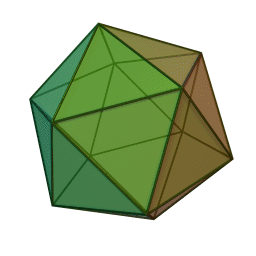
¿Y sin pegamento?
Origami o papiroflexia modular.
Conexión con la geometría: ángulos, bisectrices, simetrías, etc.
Conexión con la proporcionalidad: ¿puedo averiguar de qué medida debo tomar el cuadrado para hacer un cubo de lado \(x\) cm?
Módulo Sonobe
Alumnado de 2º, 3º y 4º de Primaria.
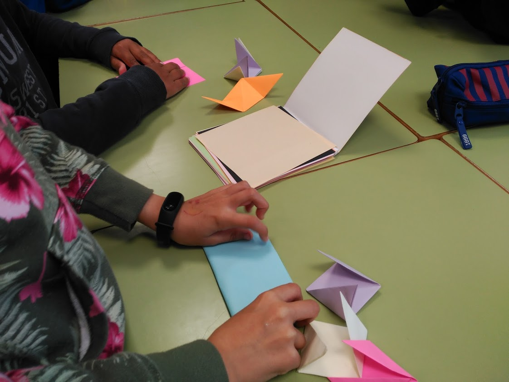
¿Qué coche ha ganado en cada mesa?
¿Cuál vas a elegir en la siguiente carrera? ¿Por qué?
Esta actividad enlaza con las siguientes:
¿ Cómo modificarías el dado para que ganara siempre el coche número 4?
Nuevo tablero: con dos dados, y coches del 1 al 12.
Diagrama de árbol para enumerar todos los casos posibles.
Aquí ya aparece de manera informal la idea de variabilidad y de distribución de probabilidad (informal). Si se quiere seguir por este camino… ver el juego de Beano.
Con software de modelado en 3D
Modelado e impresión 3D como recurso didáctico en el aprendizaje de la probabilidad.
Consigna de la tarea
La tarea consiste en diseñar un dado con ordenador. Es voluntario y añade 0,5 puntos al examen de geometría. Después, imprimiré en 3D vuestros dados, que os podréis quedar, y os pediré que los probéis para ver si están o no sesgados.
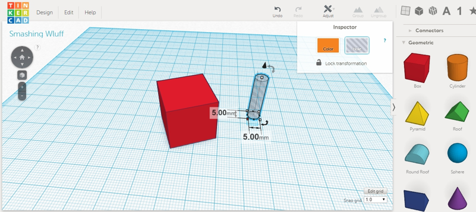
Tras unos días…
Plazo de una semana para la entrega de los diseños, recogiendo finalmente las producciones de 10 alumnos.
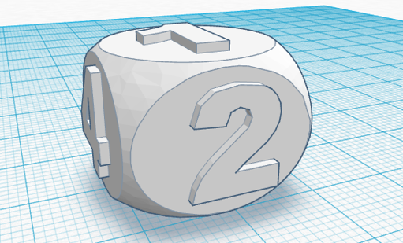
Dado con las esquinas redondeadas (forma básica)
Dado imprimiéndose
¿Es este el dado que diseñaste? ¿Te gusta cómo ha quedado?
¿Lo usarías para jugar a algún juego de mesa?
¿Cómo sabrías si es un buen dado? ¿Hacemos la prueba?
No es fácil diseñar un dado
Debates en la comunidad maker
Los dados con esquinas más redondeadas, evidentemente, ruedan más. Esto es algo que amplifica cualquier sesgo de diseño, lo que constituye una ventaja de cara a nuestros objetivos.
Si colocamos el dado para que se imprima girado 45º, obtenemos mejores resultados.
El porcentaje de relleno de los dados influye. El software traductor permite ahorrar plástico, rellenando el interior de la pieza con un mallado rectangular o hexagonal. Se comprueba que es mejor imprimir dados sólidos al 100%.
Cuando se indican los puntos con cavidades, no se ha retirado la misma cantidad de material en todas las caras, por lo que unas caras pesan más que otras.
Un error similar se produce cuando en lugar de retirar material, se añade, con lo que se propicia que se mantenga sobre ciertas caras mayor masa que en otras.
No se tiene en cuenta que la suma de las puntuaciones de las caras debería sumar 7 para facilitar el equilibrado del dado (esto está relacionado con el error de tipo 2), como ocurre en los dados estándar.
No se centran o alinean los puntos de cada cara, lo cual influye también en la distribución de masa del dado.
El dado no presenta las mismas dimensiones en todas sus caras.
En el máster de ESO (2017/18)
En la Grecia clásica
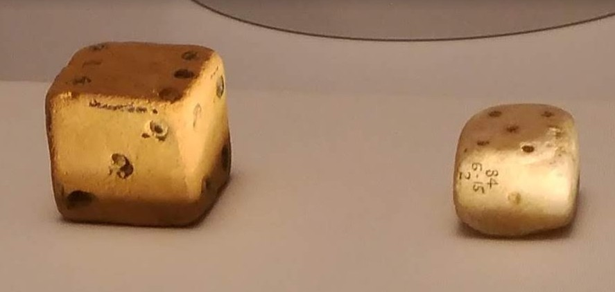
Algo muy simple para resultados no equiprobables
Con un clip y un boli
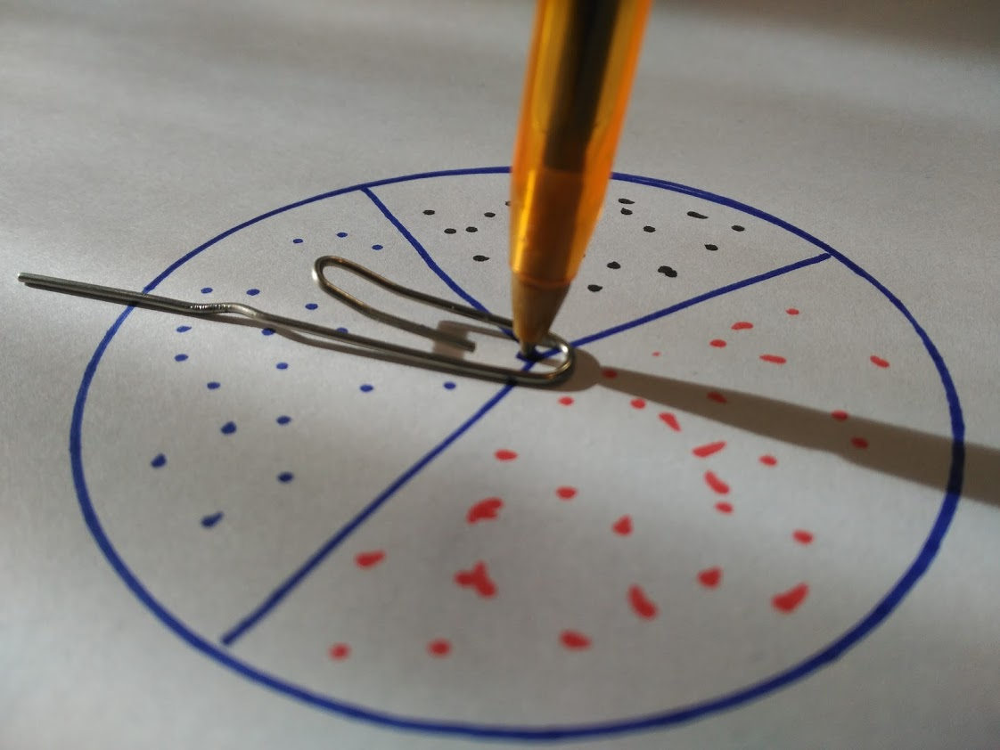
Construye una ruleta con tres sucesos de manera que uno de ellos tenga más probabilidad de ocurrencia.
Construye una ruleta con tres sucesos de manera que uno de ellos tenga \(1/4\) de probabilidad de ocurrencia.
Juegos y sorteos
¿En qué juego pensamos cuando pensamos en probabilidad?
¿Tal vez este?
¿O este otro?
Algunos de estos juegos contribuyen a la formación de creencias, como, por ejemplo, que el número cinco es el más difícil, cuando se lanza un dado. Todas estas actividades se podrían aprovechar en relación con la introducción de la probabilidad
Una propuesta para infantil
El frutal (Obstgarten)
Beltrán-Pellicer, P. (2017). Una propuesta sobre probabilidad en educación infantil con juegos de mesa. EDMA0-6, 6(1), 53-61. Enlace.
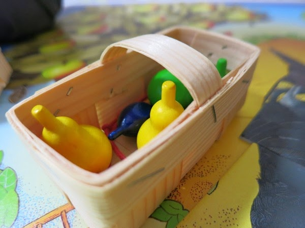
Cooperativo.
Conteo.
Colores.
Turnos.
Probabilidad.
Azul: el jugador coge una ciruela.
Verde: el jugador coge una manzana.
Rojo: se coge una cereza.
Amarillo: se coge una pera.
Cesta: es el premio gordo, se pueden coger dos piezas de fruta a elegir.
Cuervo: lo peor de lo peor. Se coloca una pieza del puzle central, que tiene 9.
Un juego de mayores
Infantil y primaria
Lo hemos visto en…
The Big Bang Theory
Catán junior
Infantil y primaria
Gana el jugador que primero construye todas sus guaridas y, para ello, hay que ir aumentando también la flota de barcos y así poder abrir nuevas rutas.
En cada turno, se lanza el dado, y en función de lo que salga te tocan unos recursos (oro, sable, madera, oveja o piña) o aparece en escena el pirata rapaz.
Siempre puede cambiarse, una sola vez por turno, una ficha de recurso por una de los salvavidas.
Siempre pueden cambiarse, las veces que se deseen, dos fichas de recurso por una de la reserva general.
En cada turno se construye lo que se desee (guarida o barco) o se pide ayuda al loro Coco, las veces que se quiera. Pedir ayuda al loro significa que se consigue una ficha de Coco, que viene con sorpresa (recursos o mover al pirata rapaz).
El que más fichas de Coco tenga, pone una guarida sin coste en el centro del tablero. Si alguien consigue más fichas, esa guarida se cambia. Y si hay dos jugadores con el mismo número de fichas, no se pone guarida.
Toma de decisiones en situaciones de incertidumbre.
Cooperativo. Mucha conversación para decidir qué hacer.
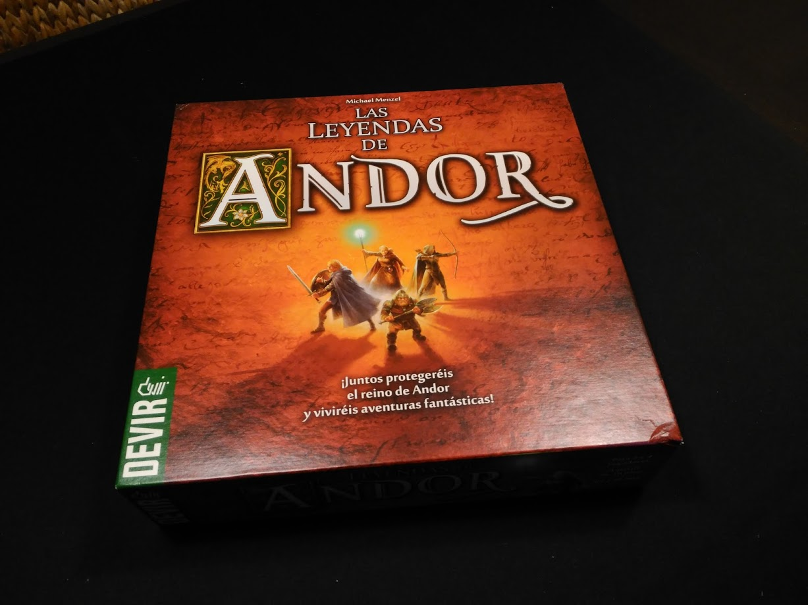
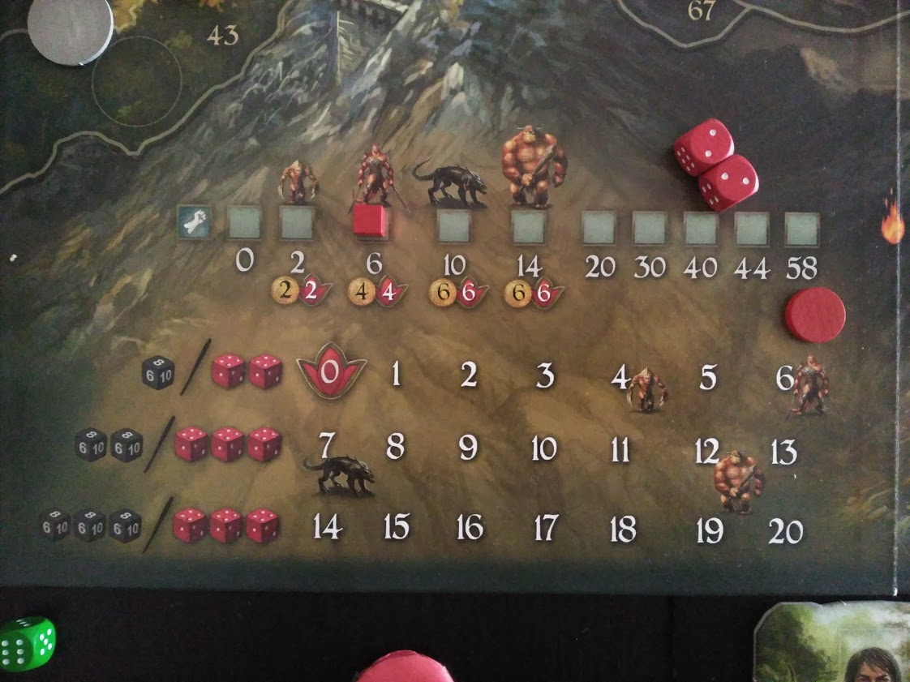
Colt Express
Primaria en adelante.
Colt Express
Pensamiento computacional y toma de decisiones en el Far West.
Adaptaciones
Tabú o juego de las palabras prohibidas.
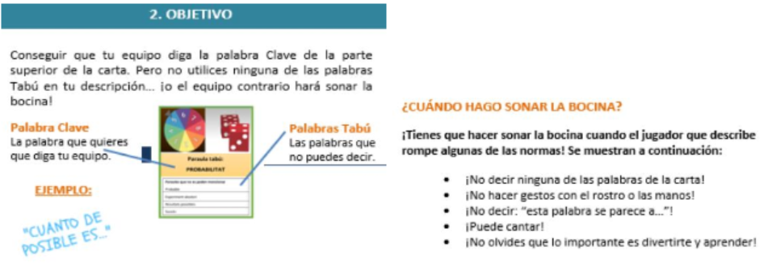
Beltrán-Pellicer, P., Ricart, M., & Estrada, A. (2019). Una experiencia sobre el diseño de juegos como recurso para desarrollar la competencia didáctico-matemática en probabilidad con docentes de infantil y primaria. Tercer Congreso Internacional Virtual de Educación Estadística (pp. 1-10). Enlace
Se planteó el diseño o adaptación de un juego como experiencia formativa.
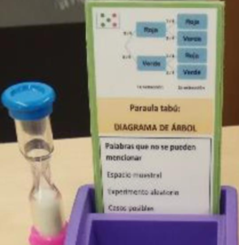
Producción de las participantes del Máster (2017/18).
Construcción de un dado mediante papiroflexia modular (relacionar con geometría y con proporcionalidad).
Juego de la carrera de coches con un dado.
Juego de la carrera de coches con dos dados.
Modificar dado para que salga siempre 4.
WODB de ruletas.
Desmos (chances).
Construcción de una ruleta.
Esto va de oportunidades de aprendizaje
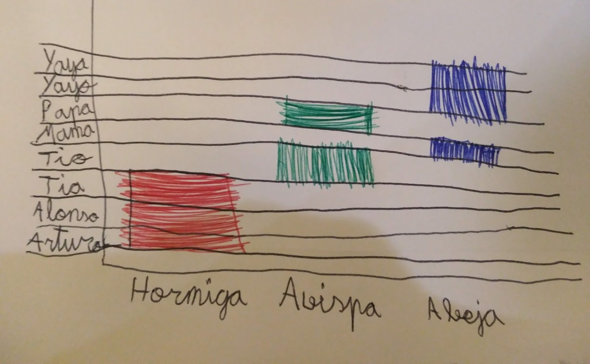
Fin de la presentación.
Créditos y referencias
Lista de referencias
Alsina, Á., & Salgado, M. (2019). Ampliando los conocimientos matemáticos en Educación Infantil: la incorporación de la probabilidad. Revista de Estudios y Experiencias En Educación, 18(36), 225–240. Enlace.
Batanero, C., & Díaz, C. (2011). Estadística con proyectos. Granada: Universidad de Granada. Enlace.
Batanero, C., & Godino, J. D. (2003). Estocástica y su didáctica para maestros. Departamento de Didáctica de las Matemáticas. Universidad de Granada. Enlace.
Beltrán-Pellicer, P. (2017). Modelado e impresión 3D como recurso didáctico en el aprendizaje de la probabilidad. Épsilon: Revista de Educación Matemática, 34(95), 99-106. Enlace.
Beltrán-Pellicer, P. (2017). Una propuesta sobre probabilidad en educación infantil con juegos de mesa. EDMA0-6: Educación Matemática en la Infancia, 6(1), 53-61. Enlace.
Beltrán-Pellicer, P., Ricart, M., & Estrada, A. (2019). Una experiencia sobre el diseño de juegos como recurso para desarrollar la competencia didáctico-matemática en probabilidad con docentes de infantil y primaria. En J. M. Contreras, M. M. Gea, M. M. López-Martín, & E. Molina-Portillo (Eds.) Actas del Tercer Congreso Internacional Virtual de Educación Estadística (pp. 1-10). Enlace
Danielson, C. (2016). Which One Doesn’t Belong? A Shapes Book. Stenhouse Publishers.
Godino, J. D., Batanero, C., & Cañizares, M. J. (1987). Azar y probabilidad. Madrid: Síntesis.
Hunter, C. (2018). Alike and Different: Which One Doesn’t Belong? and More. Vector, 60(1), 17–20.
English, L. D., & Gainsburg, J. (2016). Problem Solving in a 21st-Century Mathematics Curriculum. En L.D. English, & D. Kirshner, Handbook of international research in mathematics education (p. 326). New York: Routledge.
Gallardo, S., Cañadas, M. C., Martínez-Santaolalla, M. J., & Molina, M. (2007). Jugando con la Probabilidad. Enlace.
Knizia, R. (2010). Dice games properly explained. Pacific Northwest: Blue Terrier Press.
Vásquez, C., & Alsina, A. (2019). Conocimiento especializado del profesorado de educación básica para la enseñanza de la probabilidad. Profesorado, Revista de Currículum y Formación Del Profesorado, 23(1), 393-419. Enlace.
Créditos
Compartir el conocimiento de forma libre es una buena práctica.
En estas diapositivas se han utilizado materiales disponibles en abierto y se han citado las fuentes correspondientes. El contenido de la presentación está publicado con licencia Creative Common CC-BY-SA-4.0, lo que quiere decir que puedes compartirla y adaptarla, citándome (Pablo Beltrán-Pellicer) y poniendo un enlace a https://pbeltran.github.io/elemprob1.
Siéntete libre de trabajar con este material y de contactar conmigo para compartir tus reflexiones.


 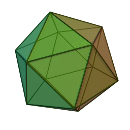
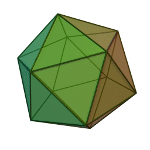 Módulo Sonobe
Módulo Sonobe